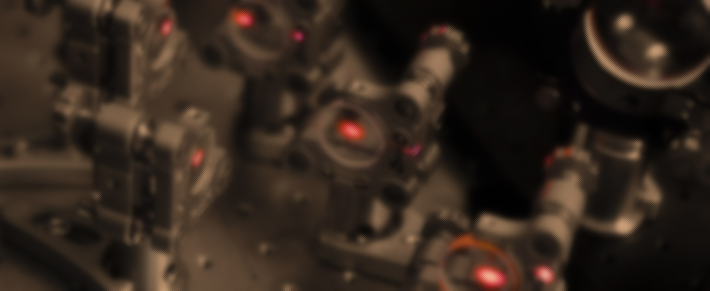

Welcome to POLUS: the physics lab portal¶
POLUS, in addition to being the titan of rational intelligence, is a central location for resources pertinent to the undergraduate laboratory program at UTAS. At this moment in time, it is very much a work in progress, but it is envisaged that this will be a one-stop shop for lab materials and the first port of call for additional resources.

Using this website
This site has been designed to be the first port of call of any and all questions. The pages for each experiments should contain all of the resources that you require to not only complete the experiment, but also understand the relevant physical concepts, and where appropriate, provide resources for your interest.
The bulk of the content on the site is devoted to support and resources, mostly housed in the reference section. It is encouraged that you look through the pages to get an idea of what is there, but as a taster, you can find:
- A discussion of uncertainties and error propagation
- Instructions on how to prepare an experimental logbook, including an annotated example
- A detailed discussion on what is an oscilloscope, how they function, and how to use them here at UTAS
- All of the software (plus more!) used throughout the labs
- Descriptions and examples of how to perform common computational tasks using
python
The site also provides a single location to access safety information - including a checklist which should be completed before attending your first laboratory class.
A home for experimental physics at UTAS¶
The raison d'être of POLUS consists of four principle motivations, outlined below.
1. Experimental content¶
This site hosts the notes for experiments, in addition to their source files, which can be downloaded and used both as a reference and as an educational resource. Additional material will also be added as it is developed, including computational resources and extension projects..
2. Reference material¶
A library of curated content that is pertinent to experimental physics and experimentation more generally is provided to help develop knowledge in the area. Content ranges from equipment operating manuals through to example reports with commentary.
3. Safety resources¶
Navigating workplace health and safety in the physics lab should not be a chore. On the site, detailed information on how to work safely and also how to develop an understanding of the safety framework are presented.
4. User-generated content¶
Science is a community-based endeavour. Content created by the physics community that is of interest to the physics community is both welcomed and encouraged. Please get in contact if you would like to share some of your content!
External resources¶
This site is dedicated to hosting content pertinent to experimental physics at UTAS, but related useful content can be found in other locations:
Gotta catch 'em all
This site is developed and maintained by the facilities manager for physics. If you come across mistakes, bugs, or have ideas for content or any other quality-of-life improvements, please get in contact!